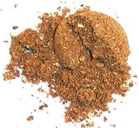

 |
Five Spice PowderChina | ||||
| Makes: Effort: Sched: DoAhead: |
10 T * 20 min Yes |
This mix is used throughout China and considered a blend of the "five flavors" (sweet, sour, bitter, pungent and salty). There are other "Five Spices" formulas, but this is the primary formula. | |||
| Important: Some years ago, importing Sichuan peppercorns into the U.S. was illegal and a lot of formulas were published using black peppercorns instead. Discard those recipes - it's not at all the same. | |||||
|
|
2 2 2 2 2 |
T T T T T |
(See Note-1) Sichuan pepper (2) Fennel seed Star Anise, whole Cloves, whole Cinnamon, whole |
This recipe is sufficient to nearly fill a 4 ounce spice jar
|